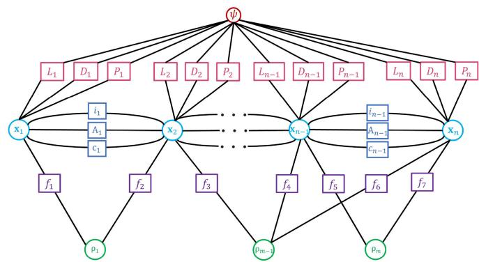
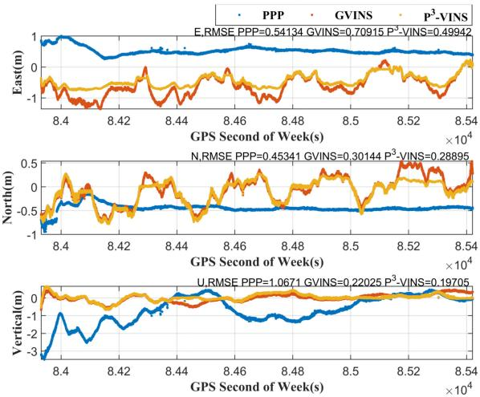
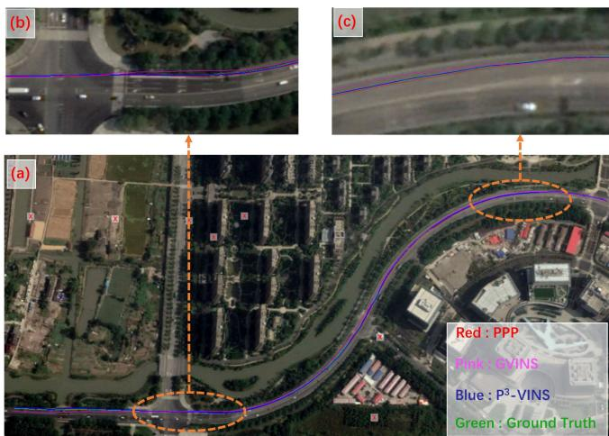
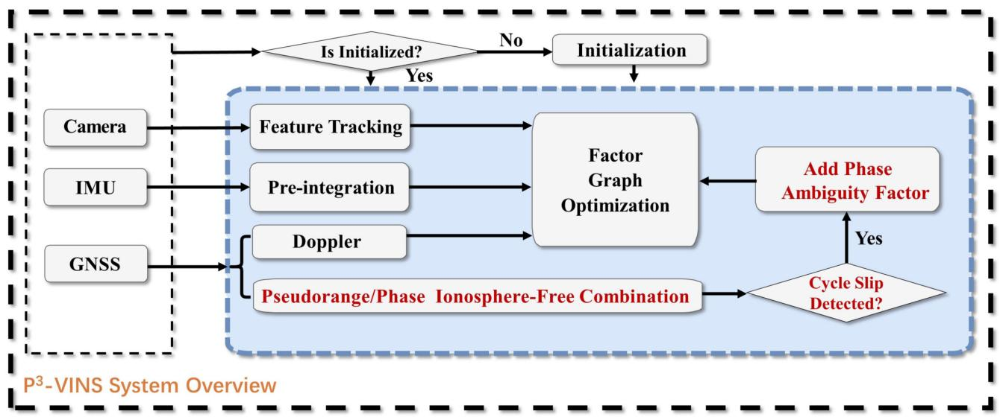

本节目标
读完你应该能说清：P³-VINS 在 GVINS 上加了哪三样东西、什么是「相位模糊度」、为什么载波相位能比伪距准若干个数量级、以及它为什么仍卡在「浮点解」。
和前面课程怎么接
① 紧耦合主线：第一季 0006（松/紧）→ GVINS → P³-VINS 在 GVINS 上再加 L+A+IF，是「紧耦合还能再紧一层」的范例。② 本季 0057 VINS-Mono：P³ 的初始化与 i/f/D/c 因子直接继承 GVINS→VINS-Mono 体系。③ 第二季 0019 BA / 0022 NEES：浮点模糊度本质是个待估整数参数，和 BA 的待估参数同属大非线性优化。
★ 先说一个 OCR / 排版坑
论文文件名和正文标题里到处是 P<sup>3</sup>-VINS 这样的上标残留。它的真名就是 P³-VINS（PPP / INS / Visual 紧耦合），那个 <sup>3</sup> 是排版残留，不是「P 的三次方」。本课一律写作 P³-VINS。
1. 它比 GVINS 更进一步在哪
上节课我们记住了 GVINS 的致命上限：只用了码伪距，精度锁在米级。P³-VINS 要做的，就是在 GVINS 的同一套紧耦合框架上，再加载波相位 + 整周模糊度 + 双频无电离层（IF）组合，把 PPP（精密单点定位）的厘米潜力揉进来。
论文 §I 自己点出 GVINS 缺两样：① 没用载波相位观测；② 没做多频组合来降误差。P³-VINS 恰好补这两刀。所以它不是另起炉灶，而是「GVINS 加三件套」。
GVINS 的观测
码伪距 + 多普勒（米级）。因子图里只有 g 因子（码伪距/多普勒）和 c 因子（钟差）。
P³-VINS 多出来的
额外加了 L 载波相位因子、A 相位模糊度因子、以及 双频 IF 无电离层组合。这就是 Fig.2 里红字标出的「与 GVINS 的差异」。
2. 相位模糊度是什么：接收机不知道自己过了几个整周
这是本课最抽象、也最该画出来的概念。载波是一列连续的正弦波。接收机量到的「相位」其实是波上某一点的小数部分——它知道自己在波的哪个位置（比如「在波峰往下一点的位置」），但不知道从卫星到接收机这整段里，波完整的振动过了几个整周。这个未知的整周数，就叫整周模糊度 N（integer ambiguity）。
打个比方：你闭眼听钟摆「滴—答—滴—答」数拍子，你能听出「现在在滴和答之间的 3/4 处」（小数相位），但如果你中途走神了，就不知道这已经是第几个「滴—答」循环了（整周数 N 未知）。一旦把 N 求出来，距离就从「含糊的小数」变成「精确的整周数 × 波长 + 小数」，精度瞬间到厘米级。
怎么看这张图：① 蓝色波每过 λ 重复一次，一个 λ 就是「一个整周」；② 红色竖线处接收机量到的是「在波上的哪个小数位置」——这部分已知；③ 但竖线落在 N=5 和 N=6 之间，到底是第几个整周（N 到底是多少），接收机不知道，这就是要解的模糊度。
要记住的一句话：知道小数相位还不够，必须把整周数 N 也求出来，距离才能精确到厘米级。
3. 为什么载波相位能比伪距准得多：波长短 = 刻度细
直觉其实很朴素：尺子的刻度越细，能读得越准。伪距量的是「码片」（一段很长的码），刻度粗，只能在码片内插值，所以到米级；载波相位量的是「波本身」，波长比码片短若干个数量级，相位能读到不足一周的小数，于是到厘米级。
★ 诚实标注：原文没给具体数字
论文通篇只用符号 λ 表示波长，没有任何「L1≈19 cm、C/A 码≈300 m」这类具体数字。所以本课不写任何具体波长/码长数字，只用「载波波长比码波长短若干个数量级」这种定性表述。凡是看到有人说本文给了 19 cm / 300 m，那都是原文没有的发挥。
相位观测模型（式 2，原文符号）：载波相位 $L = \text{几何距} + c\cdot dt_r + T - I + \lambda(N + \text{硬件偏}) + \text{噪声}$。关键就在那一项 $\lambda N$——只要解出整数 N，厘米级就到手。双频 IF 组合（式 3）则利用一阶电离层延迟 ∝ $1/f^2$，把两个频率线性组合后消去一阶电离层，进一步提精度。
怎么看这张图：① 粗尺只能在两大刻度之间「估」一个值，误差是一大块（红色半透明块）；② 细尺能落在很近的刻度上，读数精确得多；③ 注意两张图都没有标任何具体数字，只靠视觉粗细对比表达「厘米级 vs 米级」。
要记住的一句话：波长短 = 刻度细 = 测得准，但原文只给 λ 符号，没给具体波长。
4. 模糊度怎么在因子图里估（浮点解，不是固定解）
P³-VINS 对模糊度采取的是浮点解（float）策略：UPD（单差模糊度的小数部分偏差，<0.5 周）被模糊度吸收，所以只估浮点的 N。每颗星的 N 当作一个状态，没有周跳时建模成随机游走（式 8：$N_k - N_{k-1}$）；一旦发生周跳（信号短暂失锁导致整周数突变），就按式 2 重新初始化。论文没有做固定解（fixed）——也就是说它把 N 当连续变量估，没有强制取整到整数。
周跳检测用 Melbourne-Wübbena（MW）组合 + Geometry-Free（GF）组合，两者都不报周跳才认为无周跳。和 INS/Visual 的紧耦合方式：滑窗优化，初始化与 GVINS 粗到精三步完全相同，因子图（Fig.3）在 GVINS 基础上多了 L（载波）、A（模糊度）两类因子。下面这张原图就是全篇最该讲透的因子图。

怎么看这张图：和上节课 GVINS 的 Fig.6 对照看——它沿用了 i（惯性）、f（视觉）、D（多普勒）、c（钟差）四类因子，额外多了 L（载波相位因子）和 A（相位模糊度因子）。盯着这两条新边，就是 P³-VINS 比 GVINS「更狠」的地方：载波相位把精度从米级拉到厘米级。
5. 实验数字与原文承认的局限
论文在公开数据集（GVINS 的运动场序列，行人头盔）和实车两处做了对比，对手是 GVINS 和 PPP（RTKLIB）。
公开数据集（MAE / RMSE，单位 m）
P³ 0.56 / 0.61，GVINS 0.73 / 0.80，PPP 1.14 / 1.28。P³ 综合最优；PPP 竖向误差大，GVINS 横向噪声大。
实车（~2 分钟，MAE / RMSE，单位 m）
P³ 3.01 / 3.37，GVINS 5.36 / 5.84，PPP 4.55 / 4.61。PPP 最平滑但未收敛（最小误差约 3 m）。
⚠️ 收敛时间：PPP 单独需要很长时间才收敛（实车 2 分钟都不够）；P³ 因为 VIO 提供了约束，没有这个收敛慢的问题。下面两张原图分别看公开数据集的三轴误差和实车轨迹。

怎么看这张图：三轴（东/北/天）误差对比。PPP 竖向（天向）差最大，GVINS 横向噪声大，P³ 三轴都压得最平——这就是为什么论文说 P³ 综合最优。盯三根曲线谁最贴近零线即可。

怎么看这张图：实车最终轨迹。树木遮挡下 GVINS 横向噪声危险，P³ 明显更准。注意这是真实车载、约 2 分钟场景——看两根轨迹的贴合与抖动差异。
原文承认的局限（逐条）
- 仅浮点模糊度：未用 UPD，故只估 float N，精度上限低于固定解。
- 需双频接收机做 IF 组合消电离层（如 ZED-F9P）。
- 需精密星历/钟差产品：PPP 依赖精密轨道与钟差。
- PPP 收敛慢：被 VIO 缓解，但本身仍是弱项。
- 周跳：需 MW/GF 检测并重新初始化模糊度。
- 城市环境：树木对卫星信号有不可忽略影响。
小结：P³-VINS 做对了什么
- 在 GVINS 上加 L+A+IF，精度从米级冲到分米/厘米。
- 浮点模糊度 + VIO 约束，绕开 PPP 单独收敛慢。
- 初始化完全复用 GVINS 三步，工程干净。
- 下一步瓶颈：做固定解（用 UPD）还能再提一截。
6. 与 GVINS 的对照小结
把两篇放一条线上看最清楚：0006 松耦合 → GVINS（伪距+多普勒紧耦合，米级）→ P³-VINS（再加载波相位+模糊度+IF 双频，分米/厘米级），是同一条「紧耦合 + GNSS 原始观测量」主线上的三级跳。GVINS 因无载波相位卡在米级，P³-VINS 用载波相位突破到厘米——用两张 RMSE 表直接对照即可印证。

怎么看这张图：这张总览图里，红字标出的就是相对 GVINS 新增的部分（L 载波、A 模糊度、IF 双频）。把它和上节课 GVINS 的框架对照，一眼就能看出「P³-VINS 比 GVINS 多了什么」。
互动判断 1
P³-VINS 的论文里，是否给出了载波波长（如 L1≈19 cm）或码长（如 C/A≈300 m）的具体数字？
互动判断 2
P³-VINS 解相位模糊度 N 时，用的是固定解（强制取整到整数）还是浮点解（当连续变量估）？
课后练习
- 用一句话说清「整周模糊度 N」是什么，为什么它不求出就不能到厘米级？
展开查看答案
载波相位观测里含有 λN 项（N 是整周数，未知）。接收机只能量到波上的小数相位，不知道从卫星到接收机过了几个整周。只要把整数 N 求出来，距离 = 整周数×波长 + 小数，精度才能到厘米级。 - 为什么论文只写 λ、不写具体波长数字，我们却要诚实照办？
展开查看答案
因为原文通篇只用符号 λ 表示波长，没有任何 19 cm / 300 m 等具体数字。「原文没有的东西不许补」是硬规范；写具体数字属于原文没有的发挥，会误导读者以为论文给了这些量。 - P³-VINS 的 PPP 为什么「收敛慢」，又被什么缓解了？
展开查看答案
PPP 单独靠精密星历/钟差产品解算，需要很长时间才收敛（实车 2 分钟都不够）。P³-VINS 因 VIO 提供了运动约束，把模糊度和位姿一起紧耦合优化，从而绕开了 PPP 单独收敛慢的问题。 - 本篇对相位模糊度用了固定解还是浮点解？这意味着它的精度上限在哪？
展开查看答案
用的是浮点解（float），只估浮点的 N，未用 UPD 做固定解（fixed）。因此精度上限低于固定解——这是论文自己承认的局限之一。